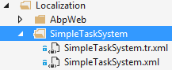
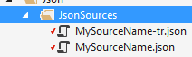
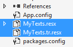
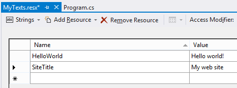
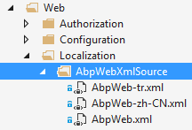

Any application has at least one language for user interface. Many applications have more than one. ASP.NET Boilerplate provides a flexible localization system for an application.
The first thing is to declare which languages are supported. This is done in PreInitialize method of your module as shown below:
Configuration.Localization.Languages.Add(new LanguageInfo("en", "English", "famfamfam-flag-england", true));
Configuration.Localization.Languages.Add(new LanguageInfo("tr", "Türkçe", "famfamfam-flag-tr"));
In server side, you can inject and use ILocalizationManager. In client side, you can use abp.localization javascript API to get list of all available languages and the current language. famfamfam-flag-england (and tr) is just a CSS class, you can change it upon your needs. Then you can use it on UI to show related flag.
ASP.NET Boilerplate templates uses this system to show a language-switch combobox to the user. Try to create a template and see source codes for more.
Localization texts can be stored in different sources. Even, you can use more than one source in same application (If you have more than one module, each module can define a seperated localization source, or one module can define multiple source). ILocalizationSource interface should be implemented by a localization source. Then it is registered to ASP.NET Boilerplate's localization configuration.
Each localization source must have a unique source name. There are pre-defined localization source types as defined below.
Localization texts can be stored in XML files. Content of an XML file is something like that:
<?xml version="1.0" encoding="utf-8" ?>
<localizationDictionary culture="en">
<texts>
<text name="TaskSystem" value="Task System" />
<text name="TaskList" value="Task List" />
<text name="NewTask" value="New Task" />
<text name="Xtasks" value="{0} tasks" />
<text name="CompletedTasks" value="Completed tasks" />
<text name="EmailWelcomeMessage">Hi,
Welcome to Simple Task System! This is a sample
email content.</text>
</texts>
</localizationDictionary>
XML file must be unicode (utf-8). culture="en" declares that this XML file contains English texts. For text nodes; name attribute is used to identify a text. You can use value attribute or inner text (like the last one) to set value of the localization text. We create a seperated XML file for each language as shown below:

SimpleTaskSystem is the source name here and SimpleTaskSystem.xml defines the default language. When a text is requested, ASP.NET Boilerplate gets the text from current language's XML file (finds current language using Thread.CurrentThread.CurrentUICulture). If it does not exists in the current language, it gets the text from default language's XML file.
XML files can be stored in file system or can be embedded into an assembly.
For file system stored XMLs, we can register an XML localization source as shown below:
Configuration.Localization.Sources.Add(
new DictionaryBasedLocalizationSource(
"SimpleTaskSystem",
new XmlFileLocalizationDictionaryProvider(
HttpContext.Current.Server.MapPath("~/Localization/SimpleTaskSystem")
)
)
);
This is done in PreInitialize event of a module (See module system for more info). ASP.NET Boilerplate finds all XML files in given directory and registers the localization source.
For embedded XML files, we should mark all localization XML files as embedded resource (Select XML files, open properties window (F4) and change Build Action as Embedded Resource). Then we can register the localization source as shown below:
Configuration.Localization.Sources.Add(
new DictionaryBasedLocalizationSource(
"SimpleTaskSystem",
new XmlEmbeddedFileLocalizationDictionaryProvider(
Assembly.GetExecutingAssembly(),
"MyCompany.MyProject.Localization.Sources"
)
)
);
XmlEmbeddedFileLocalizationDictionaryProvider gets an assembly containing XML files (GetExecutingAssembly simply refers to current assembly) and a namespace of XML files (namespace is calculated assembly name + folder hierarchy of XML files).
Note: When adding language postfix to embedded XML files, do not use dot notation like 'MySource.tr.xml', instead use dash like 'MySource-tr.xml' since dot notation causes namespacing problems when finding resources.
JSON files can be used to store texts for a localization source. A sample JSON localization file is shown below:
{
"culture": "en",
"texts": {
"TaskSystem": "Task system",
"Xtasks": "{0} tasks"
}
}
JSON files should be unicode (utf-8). culture: "en" declares that this JSON file contains English texts. We create a seperated JSON file for each language as shown below:

MySourceName is the source name here, and MySourceName.json defines the default language. It's similar to XML files.
JSON files can be stored in file system or can be embedded into an assembly.
File file system stored JSONs, we can register a JSON localization source as shown below:
Configuration.Localization.Sources.Add(
new DictionaryBasedLocalizationSource(
"MySourceName",
new JsonFileLocalizationDictionaryProvider(
HttpContext.Current.Server.MapPath("~/Localization/MySourceName")
)
)
);
This is done in PreInitialize event of a module (See module system for more info). ASP.NET Boilerplate finds all JSON files in given directory and registers the localization source.
For embedded JSON files, we should mark all localization JSON files as embedded resource (Select JSON files, open properties window (F4) and change Build Action as Embedded Resource). Then we can register the localization source as shown below:
Configuration.Localization.Sources.Add(
new DictionaryBasedLocalizationSource(
"MySourceName",
new JsonEmbeddedFileLocalizationDictionaryProvider(
Assembly.GetExecutingAssembly(),
"MyCompany.MyProject.Localization.Sources"
)
)
);
JsonEmbeddedFileLocalizationDictionaryProvider gets an assembly containing JSON files (GetExecutingAssembly simply refers to current assembly) and a namespace of JSON files (namespace is calculated assembly name + folder hierarchy of JSON files).
Note: When adding language postfix to embedded JSON files, do not use dot notation like 'MySource.tr.json', instead use dash like 'MySource-tr.json' since dot notation causes namespace problems when finding resources.
Localization text can also be stored in .NET's resource files. We can create a resource file for each language as shown below (Right click to the project, choose add new item then find resources file).

MyTexts.resx contains the default language texts and MyTexts.tr.resx contains texts for Turkish language. When we open MyTexts.resx, we can see all texts:

In this case, ASP.NET Boilerplate uses .NET's built-in resource manager for localization. You should configure a localization source for the resource:
Configuration.Localization.Sources.Add(
new ResourceFileLocalizationSource(
"MySource",
MyTexts.ResourceManager
));
Uniqe name of the source is MySource here. And MyTexts.ResourceManager is a reference to the resource manager to be used to get localized texts. This is done in PreInitialize event of the module (See module system for more info).
A custom localization source can be implemented to store texts in different sources such as in a database. You can directly implement the ILocalizationSource interface or you can use DictionaryBasedLocalizationSource class to make implementation easier (json and xml localization sources also use it). Module zero implements source in the database for example.
After creating a source and register it to the ASP.NET Boilerplate's localization system, texts can be localized easily.
In server side, we can inject ILocalizationManager and use it's GetString method.
var s1 = _localizationManager.GetString("SimpleTaskSystem", "NewTask");
GetString method gets the string from the localization source based on current thread's UI culture. If not found, it fallbacks to default language.
If given string is not defined anywhere then it returns the given string by humanizing and wrapping with [ and ] by default (instead of throwing Exception). Example: If given text is "ThisIsMyText", then result will be "[This is my text]". This behavior is configurable (you can use Configuration.Localization in PreInitialize of your module to change it).
To do not repeat source name always, you can first get the source, then get a string from the source:
var source = _localizationManager.GetSource("SimpleTaskSystem");
var s1 = source.GetString("NewTask");
This returns text in the current language. There are also overrides of GetString to get text in different languages and formatted by arguments.
If we can not inject ILocalizationManager (maybe in a static context that can not reach to the dependency injection), we can simply use LocalizationHelper static class. But prefer injecting and using ILocalizationManager where it's possible since LocalizationHelper is static and statics are not well testable (for who writes unit tests).
If you need to localization in an application service , in an MVC Controller, in a Razor View or in another class derived from AbpServiceBase, there are shortcut L methods.
Localization texts are generally needed in MVC Controller and Views. There is a shortcut for that. See the sample controller below:
public class HomeController : SimpleTaskSystemControllerBase
{
public ActionResult Index()
{
var helloWorldText = L("HelloWorld");
return View();
}
}
L method is used to localize a string. Surely, you must supply a source name. It's done in SimpleTaskSystemControllerBase as shown below:
public abstract class SimpleTaskSystemControllerBase : AbpController
{
protected SimpleTaskSystemControllerBase()
{
LocalizationSourceName = "SimpleTaskSystem";
}
}
Notice that it is derived from AbpController. Thus, you can easily localize texts with L method.
Same L method also exists in views:
<div>
<form id="NewTaskForm" role="form">
<div class="form-group">
<label for="TaskDescription">@L("TaskDescription")</label>
<textarea id="TaskDescription" data-bind="value: task.description" class="form-control" rows="3" placeholder="@L("EnterDescriptionHere")" required></textarea>
</div>
<div class="form-group">
<label for="TaskAssignedPerson">@L("AssignTo")</label>
<select id="TaskAssignedPerson" data-bind="options: people, optionsText: 'name', optionsValue: 'id', value: task.assignedPersonId, optionsCaption: '@L("SelectPerson")'" class="form-control"></select>
</div>
<button data-bind="click: saveTask" type="submit" class="btn btn-primary">@L("CreateTheTask")</button>
</form>
</div>
To make this work, you should derive your views from a base class that sets the source name:
public abstract class SimpleTaskSystemWebViewPageBase : SimpleTaskSystemWebViewPageBase<dynamic>
{
}
public abstract class SimpleTaskSystemWebViewPageBase<TModel> : AbpWebViewPage<TModel>
{
protected SimpleTaskSystemWebViewPageBase()
{
LocalizationSourceName = "SimpleTaskSystem";
}
}
And set this view base class in web.config:
<pages pageBaseType="SimpleTaskSystem.Web.Views.SimpleTaskSystemWebViewPageBase">
All these for controllers and views are ready when you create your solution from one of the ASP.NET Boilerplate templates.
ASP.NET Boilerplate makes possible to use same localization texts in also javascript code. First, you should be added dynamic ABP scripts to the page:
<script src="/AbpScripts/GetScripts" type="text/javascript"></script>
ASP.NET Boilerplate automatically generates needed javascript code to get localized texts in the client side. Then you can easily get a localized text in javascript as shown below:
var s1 = abp.localization.localize('NewTask', 'SimpleTaskSystem');
NewTask is the text name and SimpleTaskSystem is the source name here. To do not repeat source name, you can first get the source then get the text:
var source = abp.localization.getSource('SimpleTaskSystem');
var s1 = source('NewTask');
Localization method can also get additional format arguments. Example:
abp.localization.localize('RoleDeleteWarningMessage', 'MySource', 'Admin');
//shortcut if source is got using getSource as shown above
source('RoleDeleteWarningMessage', 'Admin');
if RoleDeleteWarningMessage = 'Role {0} will be deleted', then localized text will be 'Role Admin will be deleted'.
You can set a default localization source and use abp.localization.localize method without source name.
abp.localization.defaultSourceName = 'SimpleTaskSystem';
var s1 = abp.localization.localize('NewTask');
defaultSourceName is global and works for only one source at a time.
Assume that we use a module which defines it's own localization source. We may need to change it's localized texts, add new texts or translate to other languages. ASP.NET Boilerplate allows extending a localization source. It currently works for XML and JSON files (Actually any localization source implements IDictionaryBasedLocalizationSource interface).
ASP.NET Boilerplate also defines some localization sources. For instance, Abp.Web nuget package defines a localization source named "AbpWeb" as embedded XML files:

Default (English) XML file is like below (only first two texts are shown):
<?xml version="1.0" encoding="utf-8" ?>
<localizationDictionary culture="en">
<texts>
<text name="InternalServerError" value="An internal error occurred during your request!" />
<text name="ValidationError" value="Your request is not valid!" />
...
</texts>
</localizationDictionary>
To extend AbpWeb source, we can define XML files. Assume that we only want to change InternalServerError text. We can define an XML file as shown below:
<?xml version="1.0" encoding="utf-8" ?>
<localizationDictionary culture="en">
<texts>
<text name="InternalServerError" value="Sorry :( It seems there is a problem. Let us to solve it and please try again later." />
</texts>
</localizationDictionary>
Then we can register it on PreInitialize method of our module:
Configuration.Localization.Sources.Extensions.Add(
new LocalizationSourceExtensionInfo("AbpWeb",
new XmlFileLocalizationDictionaryProvider(
HttpContext.Current.Server.MapPath("~/Localization/AbpWebExtensions")
)
)
);
We could use XmlEmbeddedFileLocalizationDictionaryProvider if want to create embedded resource XML files (see Localization sources section). ASP.NET Boilerplate overrides (merges) base localization source with our XML files. We can also add new language files.
Note: We can use JSON files to extend XML files, or vice verse.
ILanguageManager can be used to get a list of all available languages and the current language.
XML files, JSON files and Resource files have own strengths and weaknesses. We suggest to use XML or JSON files instead of Resource files, because;
If you use XML or JSON, it's suggested to do not sort texts by name. Sort them by creation date. Thus, when someone translates it to another language, he/she can easily see which texts are added newly.